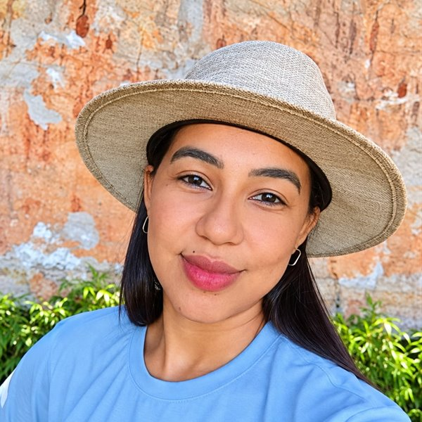

Manutenção do RURATER
Junto com a ATI, mantemos o sistema que os técnicos usam no dia a dia.
Somos o SIMA. Pegamos o que é registrado no RURATER e transformamos em informação para o Ruraltins decidir melhor.
Compilar informações, acompanhar, monitorar e avaliar as ações, programas e projetos do Ruraltins, com dados do RURATER, para a gestão decidir melhor e melhorar sempre os serviços prestados.
Objetivo do SIMA · Art. 2º da Portaria nº 36/2026/GABPRES
Junto com a ATI, mantemos o sistema que os técnicos usam no dia a dia.
Transformamos dados em relatórios gerenciais para as diretorias e gerências.
Painéis que mostram como está cada regional e cada escritório.
Quando demandado, apontamos gargalos, riscos e onde melhorar.
Ajudamos a definir metas alinhadas às ações do Instituto.
O RuralSolo, para a recomendação de solo, e o controle de transporte, em desenvolvimento.
Sistema de Informação da Assistência Técnica e Extensão Rural do Estado do Tocantins.
0 municípios · 0 escritórios · 0 regionais
Apaixonado por dados. É o nosso professor Pardal dos aplicativos.
Bem quinta série, incansável por conhecimento e pela extensão rural.
Encantada pelo trabalho do SIMA.
Resolve tudo, sempre, sem acreditar muito.
Cuida de todos com muito amor e sabe o nó que mexer com dados dá na cabeça.

Destemida: se propôs a aprender e conhecer um mundo novo.
Cada registro conta. Quanto melhor o registro, mais precisa a decisão e mais o Ruraltins chega a quem precisa.